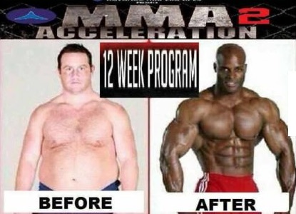
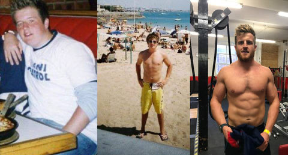

How to improve your health in 10 simple steps you can do today

If you’re not getting the results you want with your health and fitness right now are you willing to do a little test with me?
This is a test I used to do in my nutrition and fitness coaching programs with my clients. This was an essential part of the coaching process with me as I aimed to show progress in many areas of one’s life, not just on the scales (which 99% of people focus on when looking to transform themselves).
The fitness industry has also long scored people on their body composition, so if someone has lost weight they have done well and look awesome on the before and after photo on social media. But that is just ONE area of improvement, there is sleep, energy, wellbeing, enjoyment, fun, contentment, career goals, muscle built, there is in short a plethora of measures we can use as a marker of progress, and ultimately, success.
Markers of progress
I repeat, how much fat you have lost is just ONE marker of progress.
It’s also important for me to point these measures out to you because you have been conditioned to measure progress in certain ways. I have had many instances with clients where I’ve sat down and we’ve spoken about their progress, and in these chats a client is often unhappy, they say something like “Yeah I’ve done ok, but I’m not happy with my results, I’ve only lost 5 lbs this month and X happened, so yeah, I’m not that motivated to carry on tbh”.
But I like to challenge people on the truth and get to the core of any issue, so I then continue with my probing and say something like “Oh ok, so tell me about your sleep, how are you sleeping at the moment and has that improved over the last month? Are you enjoying your food now, are you getting more variety in your diet and enjoying what you eat and how it’s making you feel? How is your bloating now, are you feeling better and getting less bloating and flatulence? How energised are you feeling, generally better with more day to day energy? How is your training going, do you feel stronger, more energised when training? Tell me about these things”.
And in response I often get “Well yeah I’m sleeping well, in fact I’m sleeping right through the night now and if you remember I was waking up 2-3x per night, so yeah that’s seen good progress and I think that’s helped alongside the diet changes I’ve made with me now having a lot more energy day to day. The bloating is 100% gone, I had it once but I know why that was and it was my fault for eating X round someone’s house for dinner, but otherwise no bloating and the flatulence is 100% less, I’m dead happy with that actually. Training is good and I’m enjoying it, which is important to me, and yeah, I’m generally feeling better in myself, but know I can and need to push up the training intensity now”.
Ha.
But all of these changes are rarely enough for someone. When we set our mind to change we expect a lot will change and often take it all for granted. “I’m making changes, of course I’m going to see all these benefits, but ultimately it's what’s on the scales that counts”. Thus we often take all these positive changes for granted, and if we have an expectation that we will lose 8lbs in a month, any less will be a failure, despite what other improvements have been made like how we feel in ourselves. It might even be that some of the fat loss is unseen because we have built some muscle, or just adapted to training so we’ve got extra glycogen storage now, or are much better hydrated than when we started (all of which affect your overall weight). And this is all because we expect all the above to change because we are initiating change.
Thus, anything short of our expectation is a failure. So before we look to change, to progress, to transform, our expectations need to be fair, realistic, and broad, not just focused on fat loss.
And do you know what, being totally honest with you, all of this is really disheartening for the coach. Firstly because you’ve helped someone change a huge amount in just 4 weeks, changes that have significantly helped them, but secondly, and more importantly, that the person cannot see it, they have such warped expectations of themselves, and measure themselves so narrowly by something as transient as the level of body fat, that they simply cannot be happy with everything they have achieved. And it does make me sad as a coach. I know many other coaches agree with me on this and feel this.
But I don’t want the same for you, so I want to do two things with this blog.
Firstly, I want you to take the below test and see what your score is, and use that as a marker for change. Secondly I want you to engage and appreciate all the areas of your health you can look at to see progress, which the test will ask of you. This way you might not see changes on the scale one week, but you might see a 1-2 point improvement in your energy and sleep, and that’s progress.
Progress is progress, however small.

This is where we need to be wary of what we see and believe online. We see so many radical changes online, 8 week transformations where it appears that someone has gone from a tired TV glutton to a ripped and athletic super dad in what feels like overnight, that we accept that as the norm and expect that of ourselves. It is well known that 80% off all diets don’t last, and this is where we need to be realistic, honest and compassionate in the process of change.
So let’s get real, let’s get honest, let's get a little more compassionate to ourselves, and let’s do the score to see where you’re at. The score doesn’t need to be compared to anyone else or some kind of chart, you just want and need to know where you’re at right now, and what we can do to improve that score across the board, or in certain areas.
Go through these 10 points and score yourself out of 10, this means that at the end you will have a score out of 100.
The test
Decide where on the scale of 1-10 you are for each given question.
- How good out of 10 would you say your sleep is, do you sleep well and feel well rested when you wake up? 1 being really bad sleep, 10 being super good and always wake up well rested
- Do you feel healthy, feel you eat well, and feel good as a result of what you eat? 1 being tired and unhealthy, 10 being healthy, energised and in a good place
- Do you feel in control of your diet, or do you feel controlled by your diet, 1 being out of control, 10 being 100% in control of what you eat and why?
- On a scale of 1-10 how active would you say you are? 1 being pretty much sedentary, 10 being highly active and doing stuff every day
- On a scale of 1-10, are you at your ideal weight? 1 being way off your ideal weight, 10 being at your ideal weight and happy with your weight
- On a scale of 1-10 how stressed do you feel, 1 being super stressed and feeling overwhelmed, and 10 as chilled and under control?
- Do you have any symptoms, like skin issues, bloating, fatigue, headaches, joint pain? Score yourself on a scale of 1-10, 1 being lots of symptoms and feeling like you’re in a bad way, and 10 as a sign that you are strong, healthy and symptom free?
- Do you feel you understand food, exercise, your body and generally how to maintain it all, with a score of 1 being that you feel you know nothing and it contributes to your lack of results, to 10 being that you feel you know a lot about food and exercise and how to apply it to get results?
- Do you have control over social environments, or do they always derail you causing you to eat too much or drink too much derailing your progress? 1 being that they always derail you and you feel you spiral out of control, to 10 being someone that is fully in control and can say no when they need or want to?
- Do you feel like you are supported in your environment, with friends and family, and feel like people have your back? 1 indicating that you have no support and feel very isolated when trying to achieve your goals, to 10 feeling you’ve got all the support and people around you to achieve what you want to achieve
Add up your score and have a think about how you feel about your score.
How does it make you feel, and be honest with yourself, take a moment to think and really come to terms with what that scores says about where you are at right now.
But, don’t be overwhelmed, this is a starting point. Own that starting point, and commit to doing the work to change your score.

Have a look at 1-2 of the lowest scores and have a think how you can improve this score. If for example you scored a 3 with sleep and it was one of your lowest scores, how could you improve your sleep, what do you feel are the things that hold you back from getting a good night’s sleep, and can you implement a few things to help?
Work on this for the next week and then look to optimise another point on the list, each week you can then retest yourself on the score and show yourself progress. It’s a good tool because something as simple as sleep could see you improve multiple areas. Sleep is so important, you might find that if you improve your sleep your sleep score goes up, but also your energy level score does, your health score, and your exercise because you are feeling more rested. Then instead of seeing a 2-3 point score improvement you are seeing a 6-8 or 8-10 across the board.
And that’s cool, that’s encouraging, that’s motivating.
Fitness and nutrition changes can be overwhelming, so don’t take on more than you can handle at any given time, it only increases your chances of failure. Take one step at a time and know that is ok. You’re not competing against anyone else, just yourself, so work to be better than the person you were yesterday, not that chiselled ab person on Instagram you follow (maybe unfollow them, especially if you find it demotivating rather than motivating).
Want help on implementing any of the above?
You could grab a copy of my book ‘How to live an Awesome Life’, which covers all the above in detail.